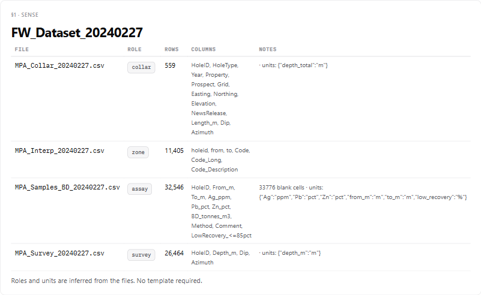
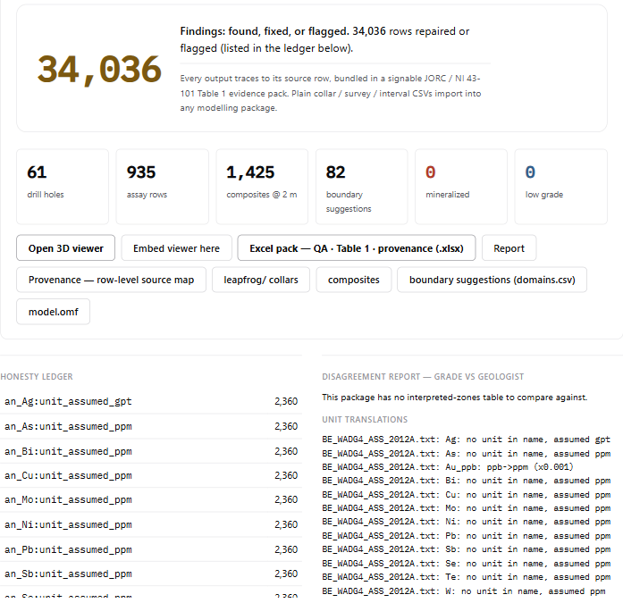

The trust layer for mining's orebody data.
Pulag turns messy, multi-vendor drillhole data into a validated, modelling-ready dataset, plus a signable evidence pack every number traces back to. Your data survives the moment it matters.
Million-dollar decisions ride on drillhole data that's trusted on a signature, not a proof.
It's scattered across incompatible vendor formats, multiple labs, and decades of legacy files. At a raise, a listing, or a sale, an independent geologist has to personally certify, under legal liability, that it's verified. Today that proof takes weeks by hand, and everyone downstream takes it on faith.
Faith becomes proof.
Ingest anything.
Any vendor, any coordinate datum, legacy files, lab exports. One pipeline, no per-source code.
Validate & flag.
A deterministic engine repairs or flags each issue by a stated rule. No black box: every problem itemised, every number traced to its source row.
Sign with confidence.
A modelling-ready package and a JORC / NI 43-101 Table-1 evidence pack you can put your name to.

Run cold, untuned, against a signed ASX prospectus and a published NI 43-101.
| Check | Pulag (from public raw) | Signed report | |
|---|---|---|---|
| KAL · BGRB244, 16–20 m | 9.34 g/t Au | 9.34 g/t Au | ties to the decimal |
| Fireweed · 2017–23 drilling | 188 holes · 47,910 m | 188 holes · 47,910 m | exact |
Two further KAL intercepts traced to a different assay dataset than the public filing: the exact JORC Table 1 "verification of sampling and assaying" question, surfaced mechanically in minutes.

The neutral layer between the platforms that can't be neutral.
The platforms that store your data profit from locking it in, so they'll never bridge to a competitor's format. Pulag is the neutral layer between them: no database to adopt, works with what you already have.